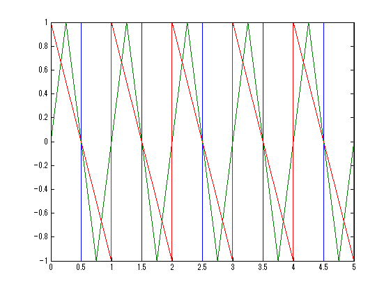

clear
clf
fsample = 44100;
delt = 1/fsample;
f = 1;
a = 1;
i = 0:1:5*fsample;
t = i*delt;
F1 = a*((mod(i,fsample/f)<=1/2*fsample/f).*1 + (mod(i,fsample/f)>1/2*fsample/f).*(-1));
F2 = a*((mod(i,fsample/f)<=1/4*fsample/f).*(mod(i,fsample/f)/(1/4*fsample/f))...
+ (1/4*fsample/f<mod(i,fsample/f) & mod(i,fsample/f)<=3/4*fsample/f).*(2-mod(i,fsample/f)/(1/4*fsample/f))...
+ (3/4*fsample/f<mod(i,fsample/f)).*(-4+mod(i,fsample/f)/(1/4*fsample/f)));
F3 = a*(1-mod(i,fsample/f)/(1/2*fsample/f));
plot(t,F1,t,F2,t,F3)
